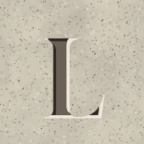

Esta piedra no está en el camino
La página que buscas no existe o ha cambiado de sitio. La casa sigue donde estaba: a la orilla del río de Magros.
Ver fechas Volver a la portada
La página que buscas no existe o ha cambiado de sitio. La casa sigue donde estaba: a la orilla del río de Magros.
Ver fechas Volver a la portada